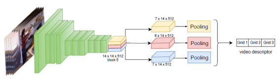
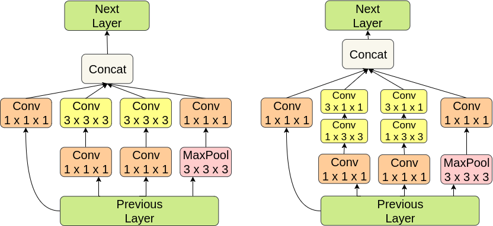

I am a masters student at Saarland University (Universität des Saarlandes) in Germany since 2019. Before that I was a computer vision engineer in the industry. I obtained my bachelors' degree in computer science and bioinformatics in 2018 from VIT University in India. During my undergraduate studies, I had the opportunity to visit the STARS team at INRIA-Sophia. There, I was trying to find the most effective representations for learning human actions the we perform everyday in collaboration with François Brémond, Srijan Das, Michal Koperski and Monique Thonnat. Before that I was a computer vision research intern in Dr. Ujjwal Bhattacharya's group at Indian Statistical Institute in Kolkata where I was working on text segmentation.
I grew up in the quaint city of Pune, India where I also did my schooling. I have a proclivity for chess, country music, good reads and hiking. I was also a part of SEDS-VIT and creation labs. Feel free to email me if you are looking for project collaborations.
| [APR20] | I will be attending MLSS 2020 which is online this year. Say Hi at the event. |
| [SEP19] | Started graduate school at UdS. |
| [DEC18] | Attending ICVGIP'18 in Hyderabad. Short talk on my paper. |
| [JUL18] | 3 papers accepted to different conferences. Big thank you to collaborators. |
| [MAY18] | Graduated from VIT |
I have broad research interests in machine learning, computer vision, mathematical optimization and more recently image synthesis. I focus on the high level aspects of computer vision but I also use mathematical optimization to solve problems in image processing. On the high level side of vision, I focus on video understanding and particularly on problems like learning from limited labels, action recognition in videos, adversarial robustness and video synthesis. Email me if you need a full CV.
2019 |
|
|---|---|
 |
A New Hybrid Architecture for Human Activity Recognition from RGB-D videos Srijan Das, Monique Thonnat, Kaustubh Sakhalkar, Michal Koperski, Francois Bremond and Gianpiero Francesca. 25th International Conference on MultiMedia Modeling, MMM 2019, in Thessaloniki, Greece, January 8-11, 2019. [pdf] |
2018 |
|
 |
Spatio-Temporal Grids for Daily Living Action Recognition Srijan Das, Kaustubh Sakhalkar, Michal Koperski, Francois Bremond 11th Indian Conference on Computer Vision, Graphics and Image Processing (ICVGIP 2018) December 18 - 22, Hyderabad, India [pdf] |
 |
Learning to Represent Spatio-Temporal Features for Fine Grained Action Recognition Kaustubh Sakhalkar, Francois Bremond IEEE international Image Processing Applications and Systems conference, Sophia Antipolis, France, 12-14 December,2018 [pdf] |